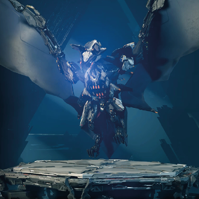
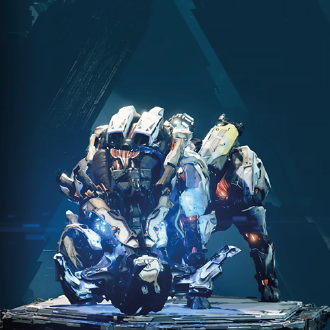

-
Rabote
Descrição
Os Rabotes têm comportamento corporal parecido com os de macacos e são grandes acumuladores de peças de máquinas destruídas. Vasculhe os montinhos de sucata deles para encontrar matéria-prima. Como já deve imaginar, eles não vão gostar nada disso.
-
Agouro
Descrição
A pior coisa que já botaram com asas nesse jogo. O Agouro, como o nome já dá a dica, é o puro suco do seu desespero. Trata-se de uma espécie de morcego enorme que te ataca com todos os elementos possíveis e mais o próprio ódio. Se for encarar um desses, estoque-se com tudo o que puder e faça umas poções de vida a mais..
-
Garraveloz
Descrição
Se der mole, você vai morrer e nem vai saber o que aconteceu direito. Eles têm a mesma agilidade e a psicopatia dos velociraptors do filme Parque dos Dinossauros. Muito cuidado com a rabada também. A parte boa é que se conseguir chegar perto o suficiente sem se matar, é possível convertê-los como montaria.
-
Presabrava
Descrição
Usar um Presabrava como montaria pode ser uma boa opção de ataque também, já que estas máquinas são bem parrudas e conseguem derrubar outras menores sem muita dificuldade..
-
Galhante
Descrição
Normalmente, os Galhantes não irão te perturbar se você não for lá mexer com eles. Mas caso isso aconteça e todos te ataquem de uma vez, pois eles andam em rebanho, prepare-se para rolar e tentar desviar das rajadas de fogo à distância.
-
Cavador

Descrição
São sacanas e extremamente irritantes, especialmente se estiverem em grupo. Tente destruí-los primeiro, pois se algum deles te avistar, vai alertar todas as máquinas ao redor e, ainda, chamar reforços.